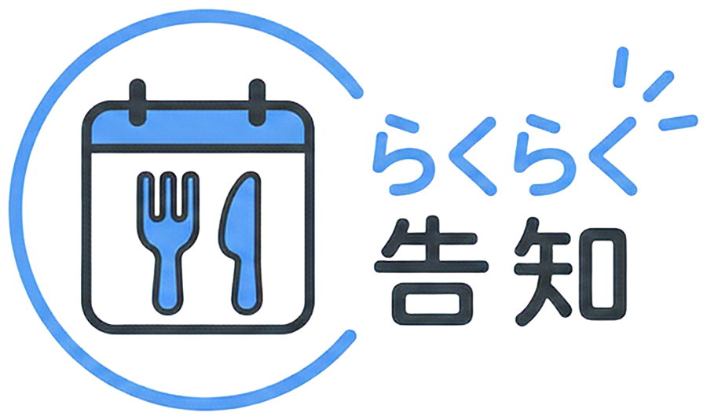

コピーしました
0/140文字
文章は自由に直せます。

お店の営業日や休業日を簡単にSNSで告知できるアプリです！慣れないことはAIにお任せして、時間にゆとりを作りましょう。
カレンダーの日付をタップしてください
特記事項があれば入力してください
限定メニューや、いつもと違う営業時間があれば入力してください。
画像と文章を確認して、お客さまに告知をしましょう
色を選ぶ
文字を選ぶ
文章は自由に直せます。
利用するには、開発者が案内した7桁の確認コードを入力してください。
AIリライト：利用できます
今月あと 20 回利用できます。
同じ内容をもう一度表示した場合、回数は減りません。
選んだ内容は、AIリライトと投稿文全体に反映されます。